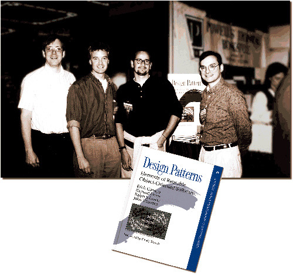
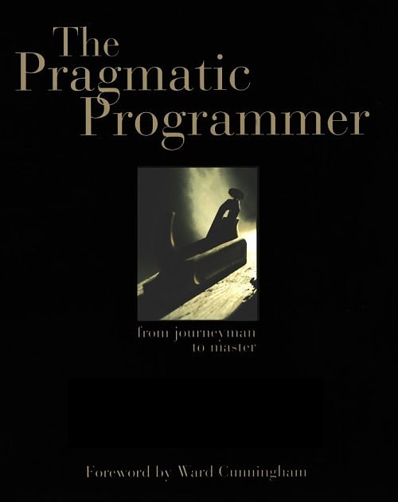

Know your Fella
Знај си ја фелата
Netcetera Spring Seminar, 04-06.04.2014 Bitola
by @lzivanov
Instead of intro
Do you know who this is?
Novak Djokovic
Do you know who this is?

Steve Jobs
Do you know who this is?
Mark Zuckerberg
What about this girl?
Iris Classon
What about this guy?
Rob Ashton
What about this madam?
Linda Rising
How come we know all those guys?
Visibility
Visibility
Virtually everywhere
How come we DON'T know all those techies?
More than 10 Million developers in the world!
It's not about fame, it's about recognition
How to get to know those persons?
Awareness?
Information?
Experience?
You have to search for them,
and recognize ones when you find them.
Let's see how are we standing?
http://bit.ly/knowfella
How it works?
Here is the question
- Choice 1
- Choice 2
- Choice 3
- Choice 4
1. Warmup: Who is this guy?
- Alan Cox
- Dennis Ritchie
- Richard Stallman
- Jeff Makey
2. Who invented Java?

- Joshua Bloch
- Kent Beck
- Rod Johnson
- James Gosling
3. Who created Tomcat?
- James Todd
- James Duncan Davidson
- Tim Funk
- Jason Hunter
4. Can you identify the authors of this book?
- Martin Fowler
- Erich Gamma
- Ralph Johnson
- Richard Helm
5. Who is this guy?
- Scott Hanselman
- Scott Guthrie
- Scott Alen
- Scott Gonzalez
6. Who is the creator of jQuery?
- Dave Methvin
- Rick Waldron
- Yehuda Katz
- John Resig
7. Who is the inventor of Git?
- Matt Mackall
- Linus Torvald
- Martin Pool
- Junio Hamano
8. Who are the authors of Pragmatic Programmer?
- Dave Thomas
- Andy Hunt
- Rober C. Martin
- Ward Cunningham
9. Who is the inventor of Rails?
- Yukhikiro Matsumoto
- Jason Fried
- Chad Fowler
- David Heinemeier Hanson
10. Who is the current leader of jug.mk?
- anikov
- ipenov
- mmitresk
- pcavkovs
Results
What can we learn?
1. Warmup: Who is this guy?
2. Who invented Java?